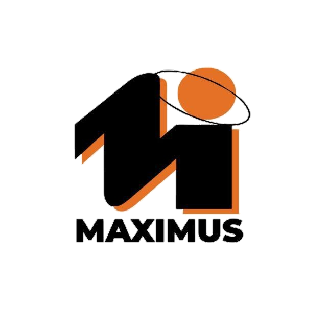
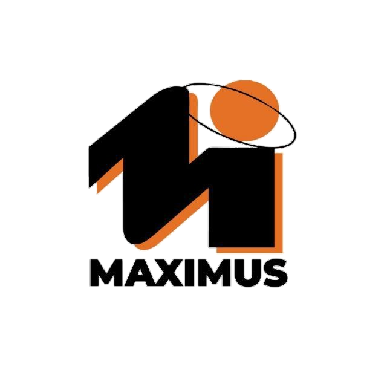

Você já sentiu a euforia de um faturamento crescente, daquele novo cliente que chegou, da meta que foi batida? É uma sensação poderosa, não é?
Mas e se eu dissesse que, enquanto você celebra essa vitória visível, há uma batalha silenciosa acontecendo nos bastidores da sua empresa, uma que pode minar todo o seu esforço, por mais alto que seu faturamento alcance?
Estamos falando da gestão de pessoas e da organização dos gastos e despesas.
Muitas vezes, enxergamos o faturamento como o coração pulsante do negócio, e ele é. Mas sem um sistema circulatório eficiente – ou seja, uma gestão de pessoas que valoriza e potencializa seu time, e um controle financeiro que zela por cada real – esse coração, por mais forte que seja, pode entrar em colapso.
Pense comigo: cada gasto desnecessário, cada despesa mal planejada, é como um pequeno vazamento em um sistema de tubulação. Você continua bombeando mais água (faturamento), mas se os vazamentos não forem contidos, a pressão diminui, a eficiência cai, e o prejuízo se acumula.
E quem está na linha de frente para identificar esses vazamentos, para otimizar processos, para evitar desperdícios? São as suas pessoas.
Uma equipe engajada, valorizada e com saúde mental e emocional – uma equipe onde a gestão de pessoas é prioridade – é a primeira linha de defesa contra o desperdício.
São eles que têm a visão do dia a dia, que podem sugerir melhorias, que se importam com o patrimônio da empresa porque se sentem parte dele.
Investir em pessoas é investir em eficiência e em uma cultura de responsabilidade financeira.
Quando você cuida de quem está na base, quando se importa com cada colaborador e com o ambiente que eles compartilham, você não apenas melhora o moral. Você cria uma consciência coletiva sobre o valor de cada recurso.
Seu time passa a ver as despesas não como meros números em uma planilha, mas como o combustível que sustenta o sonho de todos.
O sucesso financeiro não é apenas sobre o quanto entra, mas sobre o quão inteligentemente você gerencia o que sai, e isso começa e termina com as pessoas.
A verdadeira prosperidade floresce quando a emoção do faturamento se encontra com a inteligência da gestão de pessoas e a disciplina das finanças.
Quer descobrir como alinhar esses pilares essenciais e saber como a harmonia entre sua equipe e suas finanças pode levar sua empresa a um patamar de solidez e crescimento nunca antes imaginado?
Renata Constantino Lara
Psicóloga Organizacional
 
